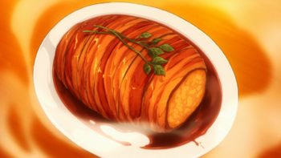

Roast Pork, Just Kidding

Description
This is a dish made by Sōma Yukihira in order to defend Restaurant Yukihira from being demolished by Yaeko Minegasaki, the urban life planner.
This is Sōma's innovative dish which is served to repel the vicious urban residential planner, Yaeko Minegasaki from destroying Restaurant Yukihira. Even when after all the meat materials were sabotaged in his kitchen, Sōma managed to turn the tides by using some of the groceries as his ingredients to create artificial meat.
Ingredients
- 6 white potatoes
- 3 Eringi mushrooms
- 1 large white onion, or 2 medium white onions
- 1 spring of rosemary
- Butter. I suggest 2 tablespoons (30ml), but you could always used a bit more
- 2 packs of thick-cut bacon
- 1 cup, or 250ml of red wine. We used a Pinot Noir since its preferable for cooking
- 1/4 cup, or 60ml of sake. Any sake that is labeled as “sweet” should do
- 2 tbs, or 30ml of soy sauce
- 1 spring of parsley or any garnish
Steps
- Peel the all the potatoes.
- Wash the potatoes then cut them into quarters or halves, depending on size.
- Chop the Mushrooms and Onions into Equally-sized Brunoise (small 5-6cm cubes)
- Steam potatoes until soft (about 15-20 minutes).
DO NOT steam or microwave the mushrooms.
- Prep the pan with a tablespoon of butter.
Pan fry onions and mushrooms until caramelized or fully golden.
- Mash into small chunks in a large bowl. Do not mash too much, you want to avoid it being frothy to form it to shape.
- Mix until the ingredients are even in the bowl.
- Pick the rosemary off its stem.
Set aside.
- Add a few sprinkles of salt to the top of the bowl.
- Let the mix cool until touchable (more than 5 minutes).
CAUTION HOT -Take all of the mix and form it into a log shape.
- Amount: 2 packs of thick-cut bacon.
Wrap the roast fully, try not to leave any gaps, otherwise, the potatoes will seep out when the bacon tightens.
There is no surefire way of doing this, just coat it to the best of your ability.
- Tie the roast with the twine. It doesn’t need to be anything fancy, just wrap it around a few times.
Intertwine the rosemary afterward.
- Bake at 375ºF or 190ºC for 30-45 minutes or until bacon is golden (cook longer for crispy bacon), turning halfway.
- Amount: 1 Cup, or 250ml.
Bring the wine to a boil (~10 minutes) on medium-high heat in a frying pan. The aim is to reduce it.
- Amount: 1 tbs of butter, 1/4 cup of sake, 2 tbs of soy sauce.
Melt the butter into the boiling wine.
Pour the soy sauce and sake into the sauce.
Continue to cook for 2-3 minutes.
- When the baking is done, remove the twine and rosemary, they are not to be eaten.
- Pour the finished sauce onto the roast (make sure the roast is on a plate to hold the extra sauce). Pour slowly.
- Add a garnish to the top of the dish.
- Serve.